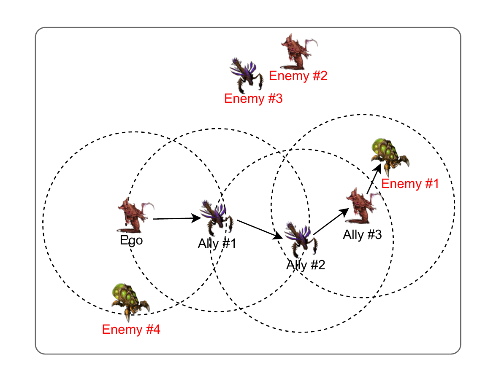
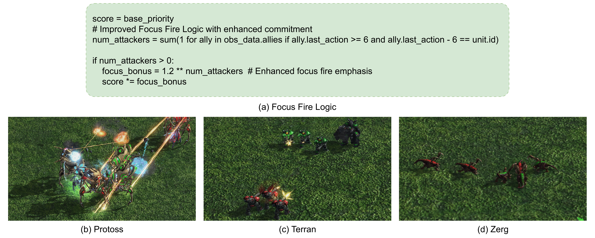
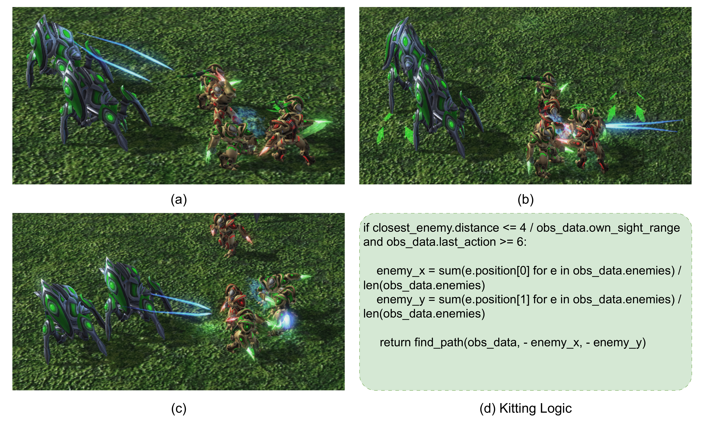
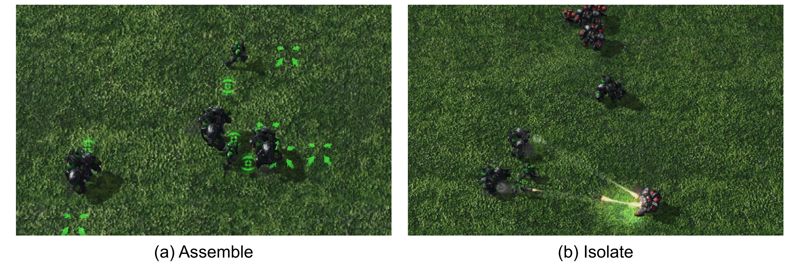
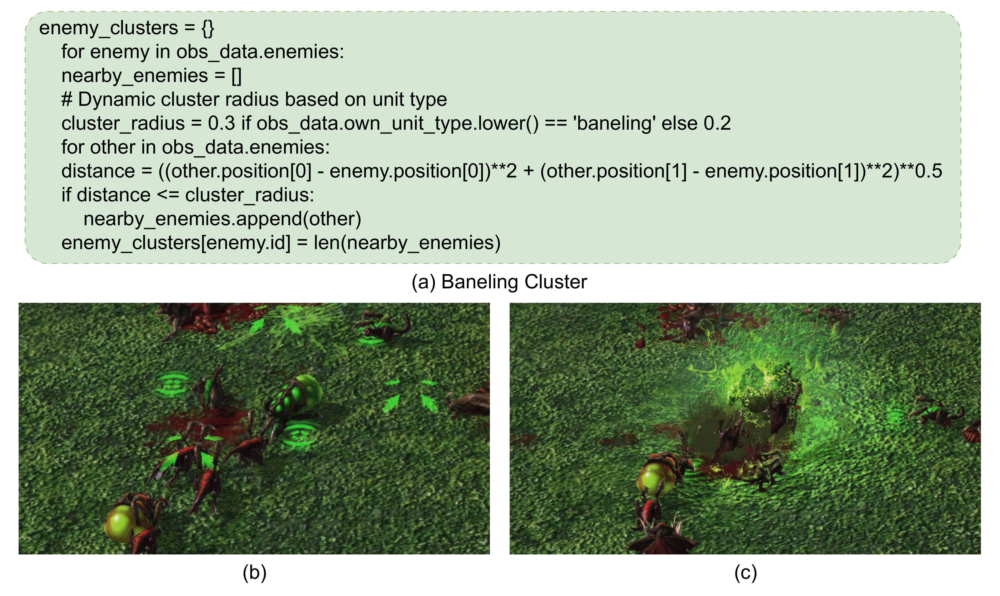

VLMs perform bootstrapping by analyzing offline data for initial tactic analysis and skill generation into a skill library. Incremental synthesis uses task reasoning and self-reflection to dynamically generate or enhance code-based skills.
Method
Adaptive Skill Synthesis

Overview of Adaptive Skill Synthesis. VLMs perform (Top) Bootstrapping by analyzing offline data for initial Tactic Analysis and Skill Generation into a Skill Library. (Bottom) Incremental Synthesis uses Task Reasoning/Self Reflection to dynamically generate or enhance code-based skills.

Task Reasoning

Self Reflection
Structured Communication Protocol
COMPASS implements a hierarchical communication protocol that focuses on efficient entity-based information sharing and multi-hop propagation. Each agent maintains an observation buffer containing information about entities in its field of view.

Multi-hop Communication. At each timestep, agents share their local observations, which are then aggregated into a global entity memory accessible to all. COMPASS employs a multi-hop communication mechanism to propagate information about distant entities.
Skill Analysis

Focus Fire Logic Implementation. VLM-generated Python code implementing dynamic focus fire logic. The code prioritizes enemy units based on the number of allied attackers.

Kitting Logic. Progressive stages of the kitting tactic where allied units strategically maintain optimal attack range while retreating from melee enemies.

Isolating Logic. Allied units strategically assemble into a cohesive formation, then execute rapid engagement against an isolated enemy unit.

Area-of-Effect (AOE) Optimization. The VLM-generated code calculates optimal detonation positions by analyzing enemy cluster density.